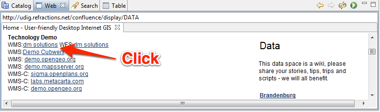
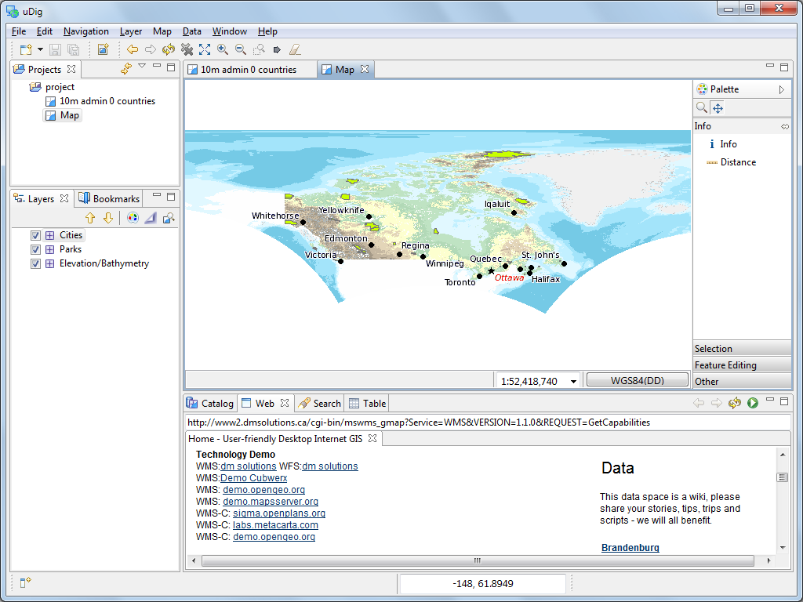
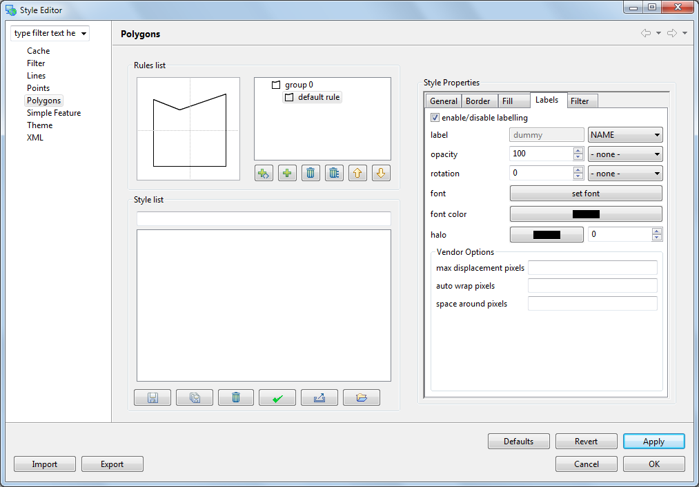

Quickstart¶
This is a quick introduction to the uDig application included as part of online help.
Natural Earth Sample Data¶
This quickstart makes use of sample data kindly made available by the Natural Earth project:
Right click on the following links and choose Save Link As...:
Tip
If you are using this in a classroom setting or OSGeo Live the files should be on your DVD
If you have your own GIS data please feel free to experiment. Making use of the above sample data will enable you to follow along with this tutorial step by step.
The data_1_3.zip download is the full dataset used by Walkthrough 1.
Note
Natural Earth Data
We would like to thank www.naturalearthdata.com for this sample data. Please visit their web site to download individual files (and at different scales for more detailed work):
- HYP_50M_SR_W.zip,
- 10m-populated-places-simple.zip,
- 10m-admin-0-countries.zip,
- 10m-admin-1-states-provinces-shp.zip,
- 10m-urban-area.zip,
- 10m-geography-regions-polys.zip,
- 10m-geography-regions-points.zip,
- 10m-geography-regions-elevation-points.zip,
- 10m-geography-marine-polys.zip,
- 10m-land.zip,
- 10m-ocean.zip,
- physical/10m-lakes.zip,
- physical/10m-rivers-lake-centerlines.zip
uDig Application¶
Choose uDig 1.3 ‣ uDig from the start menu
The application will take a few moments to start up

The uDig application keeps a configuration folder in your home directory, the folder will be created the first time the application is launched. If you have any difficulties, or are running uDig on Linux or Mac please review the Running uDig reference page.
Welcome View¶
When you start up uDig for the first time the Welcome view is displayed on the right hand side of the screen. This view has links to tutorials, documentation and the project web site.

To close the Welcome view click the x next to the word welcome.
You can return to the Welcome view at any time using the menu bar Help ‣ Welcome.
Workbench¶
The Workbench window offers multiple Editors (each showing a Map) and supporting Views (offering information about the current Map).
The above screen shows the uDig application in action with an open Map editor surrounded by the Projects view, Layers view and Catalog view. These views will be described further as we demonstrate their use.
Interaction is provided by:
- The application menubar is located along the top of the screen with a toolbar for quick access to common actions
- The Map editor interaction is controled by selecting different tools in the Palette provided
- Views provide a View toolbar for common actions followed by a downward arrow to access a more extensive View menu
- Selected content provides a right click context menu
Files¶
To start out with we are going to load some of the sample data you downloaded earlier.
Choose Layer ‣ Add from the menu bar to open up the Add Data wizard
Select Files from the list of data sources
Press Next to open up a file dialog
Select the following file from your data folder: 10m_admin_0_countries.shp
Press Open
- A new Map editor will be opened based on the contents of your shapefile. The default name and projection of the Map has been taken from your shapefile.
- You can see the Catalog view has been updated with an entry for 10m_admin_0_countries.shp. This view is used to track the use of resources by the uDig application.
- The Layers view shows a single layer is displayed on this map. This view is used to change the order and appearance of information in your Map.
- The Projects view has been updated to show that your map is stored in a project. You can have multiple projects open at a time, each project can have several maps.
Open up your data folder in the file system
Drag the file NE1_50M_SR_W.tif onto the Map Editor, a new layer is added to to the map.
You can see the order the layers are drawn in the layer view. Right now the NE1_50M_SR_W layer is drawn on top of the 10m_admin_0_countries layer.
Select the NE1_50M_SR_W.tif layer in the catalog view and drag it to the bottom of the list

You can also use the up and down buttons in the Layers view to reorder.
Tip
You can also drag and drop shapefiles directly into the uDig application!
Note
A common questions asked when using uDig for the first time is how big a shapefile can uDig load?
The application uses a fixed amount of memory for each layer, and does not load shapefiles into memory. We have a policy of keeping data on disk and drawing information, such as this shapefile, onto the screen as needed.
Map¶
The Map Editor includes Palette of tools for map interaction. Use the navigation tools along the top of the Palette to control where the Map Editor is looking.
The
 Zoom tool is available by default
Zoom tool is available by default- Use the zoom tool by drawing a box using the left mouse button around the area of the world you wish to see.
- To zoom out draw a box with the right mouse button. The current map extents will be located within the box you draw.
Tip
Most tools allow you to Pan by holding the center button and control the scale using the scroll wheel.
The
 Pan tool can be used to scroll around your map with out changing scale.
Pan tool can be used to scroll around your map with out changing scale.- You can change the behavior of the Pan tool using the tool option area located along the bottom edge of the map.
The toolbar is updated to reflect the current map and contains several actions to control rendering:
 Show All, can be used to return to the full map area at any time
Show All, can be used to return to the full map area at any time Zoom In and
Zoom In and  Zoom Out can be used to change the scale by a fixed amount
Zoom Out can be used to change the scale by a fixed amount- Actions to Redraw Map and Stop Drawing are available
The application menubar is also updated to work with the current map.
- You can use Navigation ‣ Back and Navigation ‣ Forward in the menu bar to cycle though previously visited locations.
Web Map Server¶
One of the reasons to use an application like uDig is to access all the great free geospatial information available on the web. This section covers the use of Web Map Servers which make available layers of information that you can mix into your own maps.
Select File ‣ New ‣ New Map from the menu bar
Change to the Web view, click on the tab next to the Catalog view to reveal the Web view.
Click on the link WMS:dm solutions link
From the Resource Selection page we are going to choose the following layers:
- Elevation/Bathymetry
- Parks
- Cities

Press Finish to add these layers to your map
Use the
Zoom tool to move closer to one of the ParksSwitch to the
 Info tool and click on one the parks.
Info tool and click on one the parks.The Information view is opened for more details on the area clicked.
Tip
You can switch between the zoom and info tools by pressing Z and I on the keyboard.
Style¶
From the Projects view select project –> 10m admin 0 countries. You can double click to open this Map, or right click for Context menu ‣ Open Map.
With the map open use the Layers view to select the 10m admin 0 countries layer.
Open up the Style Editor dialog by right clicking on 10m admin 0 countries layer and using Context menu ‣ Change Style.
We are going to change a few things about how countries are displayed.
The Polygons page provides a series of tabs for us to fill in:
- Border Click on the Color and change the color to BLACK
- Fill uncheck the box disable fill
- Label check the box to enable labels. For the label value select NAME from this list of attributes.
Press Apply to see what this looks like on your Map, the Layer view will also be updated to reflect the current style
When you are happy with the result you can press Close to dismiss the dialog
It is a bit hard to see what is going with the raster layer providing so much details. Select Map ‣ Mylar from the menu bar to focus on the selected layer
Using the Layer view select the different layers in turn to see the effect.

You can turn off this effect at any time using Map ‣ Mylar from the menu bar
What is Next¶
This is only the first step on the road to using uDig. There is a lot more great material (and ability) left for your to discover in our walkthroughs.
- Walkthrough 1 - Try out the use of PostGIS, extract data from a Web Feature Server and explore the use of Themes with our powerful Color Brewer technology.
- Walkthrough 2 - Learn how to create shapefiles and use the Edit tools to manipulate feature data, covers the installation of GeoServer and editing with a Web Feature Server.